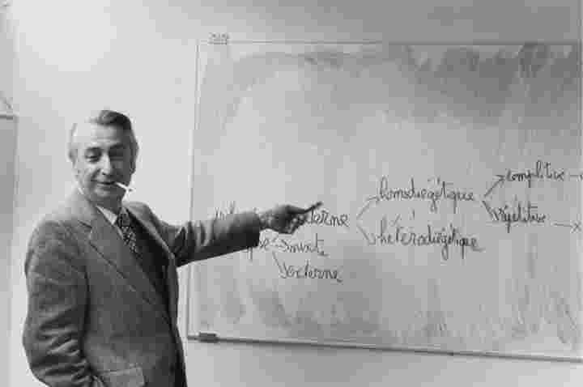

罗兰·巴特于1980年猝然离世，当时他是文化与批评领域内的大人物：他具有强大的影响力，评点世间一切，并且以显著的先锋姿态极大地改变了人文学科（尤其是文学研究）。二十年过去了，他的地位变得更加扑朔迷离。对于我们来说，巴特如今意味着什么？他是个什么样的作家，或者说，什么样的知识分子？也许应该问：如今我们要读巴特的哪些作品？为什么要读？长期出版巴特著作的门槛出版社已经推出了他的全集，厚厚的三卷本，共计数千页。其中不仅囊括了他的代表作，还收录了数以千计的短篇文字及应酬之作。巴特的最后一部作品《明室：摄影札记》畅谈了个人对于摄影的看法，颇多创见，不落俗套，因而被广泛引用、赞扬和讨论。他的早期作品《神话学》是文化研究领域的奠基之作，研究者在讨论这一领域时多援引此书。在以上两部作品之间的许多著作和文章——尤其是《S/Z》和《文之悦》——在大学里被选为文学批评或文学理论课程的阅读书目。那么，巴特是文学理论家吗？作为一名从未在生前公开性取向并且在遗作中也很少谈及本人性生活的同性恋者，巴特引起了同性恋研究者的兴趣。他的自传体作品《罗兰·巴特自述》是一部极为诱人、极具创意的著作，是关于思想和写作的冒险最动人的论述之一。要是只考虑“该读些什么”这一问题，现在就更迫切需要评估巴特和他的贡献了。
本书原本为丰塔纳出版社推出的现代大师系列而写，在巴特去世不久后出版。书中分析了他的成就，并且描绘了他的多重身份，针对的读者群体是那些认为巴特有用、有趣和富有创意的人。巴特的作品涉及如此广泛的领域——他的情绪和文体也同样如此——以至于每个人都能从巴特身上找到适合自己的一面，但关键的问题是，巴特能带领我们走向何方和他的魅力产生了什么样的影响。在这个新的版本中，我只对主体文本做了些许修改，一方面因为我对于巴特的绝大部分看法依然成立，另一方面也因为太多的干预可能会创造出一个不均衡的文本，导致年轻时的我和中年的我这两种声音在其中相互争执。除了稍加阐释之外，我还加入了新的研究书目，但最重要的是，我增添了最后一章来描述巴特去世后的地位变化，并且对于他在当今时代的价值提出了我自己的看法。
伊萨卡市，纽约州
2001年6月
凡涉及巴特的作品，本书使用的引文格式如下：（第154/136页）。前一个数字为法文原版的页码，后一个数字为英译本的页码，在“推荐阅读”部分列出了英译本的具体信息。

图1 巴特在高等实用研究院的研讨会上，1973年。